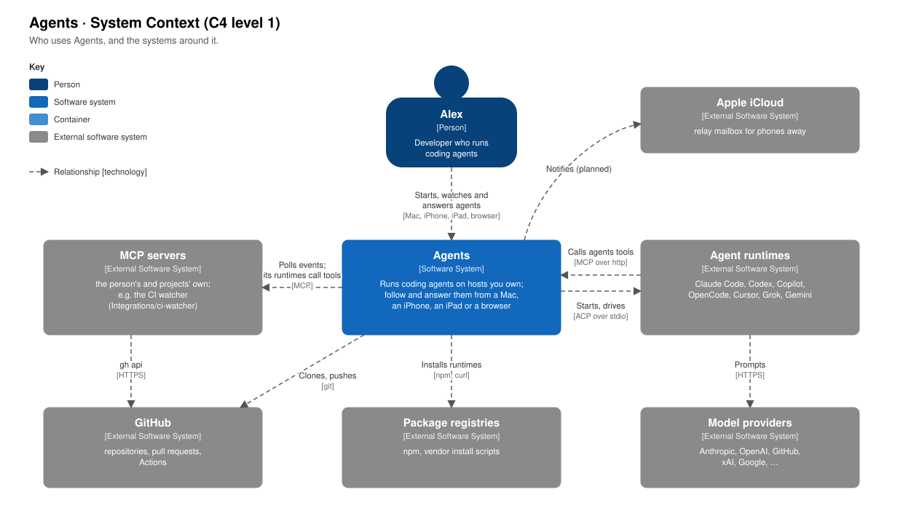
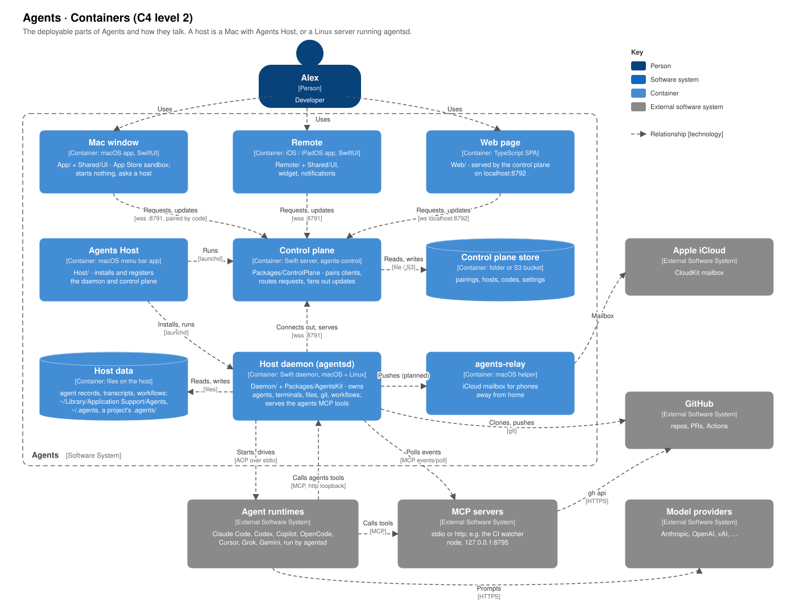
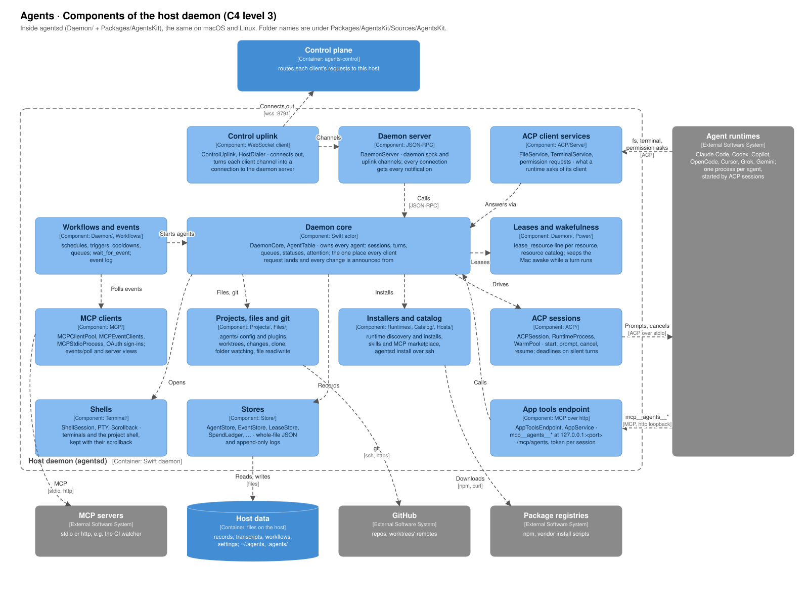
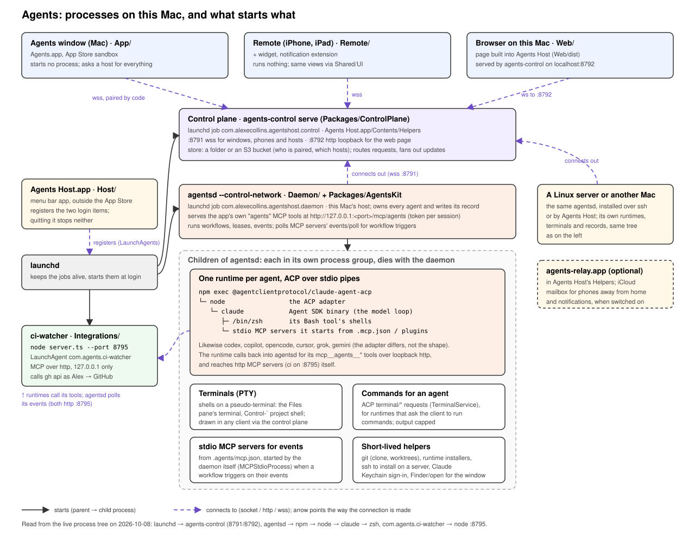

Architecture¶
Four views of Agents, from the outside in, in the style of the C4 model: the system and its neighbours, the containers it is made of, the components inside the host daemon, and how they run as processes on a Mac.
System context¶

You use Agents to run coding agents on hosts you own, and follow and answer them from a
Mac, an iPhone, an iPad or a browser. Agents does not talk to a model itself. It starts and
drives an agent runtime (Claude Code, Codex, Copilot, OpenCode, Cursor, Grok or Gemini)
over ACP, and the runtime prompts its own provider. A runtime calls back into Agents for the
app's own tools (mcp__agents__*) over MCP.
Agents also polls MCP servers for the events that trigger workflows, clones and pushes to GitHub with git, and installs runtimes from package registries. A relay through iCloud carries phones away from home, and their notifications, when Relay for my devices is on.
Containers¶

| Container | Code | Technology | What it does |
|---|---|---|---|
| Mac window | App/, Shared/UI |
macOS app, SwiftUI, App Store sandbox | A client. Starts nothing; asks a host for everything. |
| Remote | Remote/, Shared/UI |
iOS and iPadOS app, SwiftUI, with a widget | A client, on the phone and the iPad. |
| Web page | Web/ |
TypeScript single-page app | A client, served by the control plane on localhost:8792. |
| Agents Host | Host/ |
macOS menu bar app | Installs the daemon and the control plane, registers them with launchd, makes pairing codes. |
| Control plane | Packages/ControlPlane |
Swift server, agents-control |
Pairs clients, routes each request to its host, sends updates to clients. :8791 wss, :8792 loopback http. |
| Control plane store | A folder or an S3 bucket | Who is paired, which hosts there are, unused codes, settings. Nothing about agents. | |
| Host daemon | Daemon/, Packages/AgentsKit |
Swift daemon, agentsd, macOS and Linux |
Owns agents, terminals, files, git and workflows on its host. Serves the agents MCP tools. |
| Host data | Files on the host | Agent records and transcripts in ~/Library/Application Support/Agents; the person's settings in ~/.agents/settings, and shared skills and instructions in ~/.agents (the ~/.agents folder); a project's own .agents/. |
|
| agents-relay | Host/Relay |
macOS helper | Planned: an iCloud mailbox for phones away from home. |
Every connection to the control plane is made outwards: from a client, and from each host. A client never reaches a host directly, and a host never needs to be reachable. A Linux server or another Mac is one more host daemon with its own host data, connected the same way. See The control plane.
Components of the host daemon¶

agentsd is the same program on macOS and Linux. Its code is in Daemon/ (a short
main.swift) and Packages/AgentsKit. The folders below are under
Packages/AgentsKit/Sources/AgentsKit.
| Component | Code | What it does |
|---|---|---|
| Control uplink | Daemon/ControlUplink, HostDialer |
The host's one connection out to the control plane. Each client's channel on it becomes a connection to the daemon server. |
| Daemon server | Daemon/DaemonServer |
JSON-RPC, over daemon.sock and over the uplink's channels. Every connection gets every notification, so clients agree. |
| Daemon core | Daemon/DaemonCore, AgentTable |
The actor that owns every agent: sessions, turns, queues, statuses and attention. Every request lands here, and every change is announced from here. |
| Workflows and events | Daemon/DaemonCore+Workflows, +Events, +EventWaits, Workflows/ |
Schedules, triggers, cooldowns and queues. wait_for_event and the event log. |
| Leases and wakefulness | Daemon/DaemonCore+Leases, ResourceCatalog, Power/ |
A line per declared resource. Keeps the Mac awake while a turn runs. |
| MCP clients | MCP/ |
The daemon's own connections to MCP servers: events/poll for workflow triggers, server views and OAuth sign-ins. |
| Projects, files and git | Projects/, Files/ |
.agents/ config and plugins, worktrees, changes, clones, folder watching, and file reads and writes for clients. |
| Installers and catalog | Runtimes/, Catalog/, Hosts/ |
Finds and installs runtimes, installs skills and MCP servers from the marketplace, installs agentsd on a server over ssh. |
| ACP sessions | ACP/ |
Starts each runtime, and prompts, cancels and resumes it over ACP. Keeps a few warm between turns (WarmPool), and puts deadlines on silent turns. |
| ACP client services | ACP/Serve/ |
Answers what a runtime asks of its client: files, terminal commands, permission requests. |
| App tools endpoint | MCP/AppToolsEndpoint, ACP/Serve/AppService |
The mcp__agents__* tools, over loopback http with a token per session. |
| Shells | Terminal/ |
Terminals and the project shell, each a pseudo-terminal with its scrollback. |
| Stores | Store/ |
Whole-file JSON and append-only logs in the host data, kept by one rule (StoreFile). |
Processes on this Mac¶

This is how the containers above run on a Mac. A solid arrow means one program starts another. A dashed arrow is a connection, pointing the way it is made.
Agents Host registers two login items, and launchd runs them whether Agents Host is open or not:
| launchd job | Program |
|---|---|
com.alexecollins.agentshost.daemon |
agentsd --control-network |
com.alexecollins.agentshost.control |
agents-control serve --port 8791 |
The clients start no processes. Every process to do with an agent is a child of agentsd,
in a process group of its own, so stopping an agent, or the daemon, takes its whole group
with it:
- A runtime per agent, speaking ACP over stdio. For Claude:
npm exec @agentclientprotocol/claude-agent-acp→node(the ACP adapter) →claude(the Agent SDK binary). The runtime starts its own children: shells for its Bash tool, and the stdio MCP servers in.mcp.jsonand plugins. - Terminals: shells on a pseudo-terminal, such as the Files pane's terminal and the Control-` project shell.
- Commands for an agent: what a runtime asks its client to run over ACP's
terminal/*. - MCP servers for events: stdio servers in
.agents/mcp.jsonthat a workflow triggers on, polled by the daemon. - Short-lived helpers: git, runtime installers, ssh to install on a server, the Claude Keychain sign-in, and opening files and Finder for the sandboxed window.
The agents MCP tools are not a process. The daemon serves them at
http://127.0.0.1:<port>/mcp/agents, with a token for each session (#185). An http MCP
server, such as the CI watcher on 127.0.0.1:8795, belongs to no one in this tree: it is
a LaunchAgent of its own.